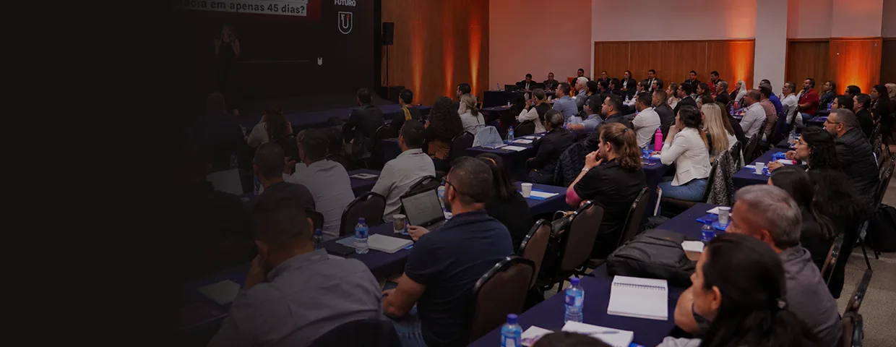

Dois dias presenciais, com um grupo enxuto de donos e gestores de farmácia, para trabalhar sobre a operação real de cada participante. Você não sai com um caderno de anotações: sai com diagnóstico, prioridades e um plano de execução definido.
Por que esta imersão existe
A maior parte dos problemas que chegam até mim não é de venda. É de estrutura: o dono virou gargalo, a equipe executa sem processo, os indicadores existem mas ninguém usa para decidir, e quem lidera nunca foi preparado para liderar.
Esses problemas não se resolvem com um treinamento de quatro horas. Precisam de tempo, de contexto e de alguém olhando para a sua operação, não para uma farmácia genérica de slide.
O que vamos trabalhar
- Diagnóstico da sua operação a partir dos cinco pilares do Método Wolf Farma
- Como sair da operação sem que a farmácia pare de andar
- Padronização das rotinas de compra, estoque, atendimento e caixa
- Os indicadores que realmente importam, e o ritmo certo de acompanhá-los
- Como formar, cobrar e desenvolver quem lidera a sua equipe
- Construção do plano de execução para os 90 dias seguintes
Para quem é
Proprietários, sócios e gestores de farmácias com 1 a 10 lojas que já cresceram o suficiente para a desorganização doer, mas ainda não têm uma estrutura de gestão que sustente o próximo salto.
Como funciona
Grupo reduzido, dois dias completos, formato de trabalho, não de palestra. Cada bloco combina conteúdo, aplicação sobre o caso de cada participante e troca dirigida entre o grupo. O material de apoio e o plano de execução ficam com você ao final.
Datas, local e inscrição
17 e 18 de outubro de 2026, das 9h às 18h, em São Paulo (SP). A turma é reduzida e as inscrições se encerram assim que as vagas forem preenchidas.
Para participar, garanta a sua vaga. A inscrição e o pagamento são processados por parceiro externo, então você será levado para outro site para concluir a compra.
Conteúdo ilustrativo de protótipo. Programação, datas e valores serão substituídos pelas informações oficiais do evento.